Protection units are a feature used for setting the usage status of the memory read/write attributes and the cache/write back, and for protecting the memory. Eight regions can be mapped in the memory space, and different attributes can be configured for each.
Protection units can only be used on the ARM9 processor.
The functions below enable or disable the protection units.
OS_EnableProtectionUnit()
OS_DisableProtectionUnit()
The following functions perform each of the protection region settings:
OS_SetProtectionRegion()
OS_SetProtectionRegionParam()
The following functions get the settings:
OS_GetProtectionRegionAddress()
OS_GetProtectionRegionSize()
OS_GetProtectionRegionParam()
By default, each region is mapped as indicated below.
When the regions overlap, the higher region number has priority.
| Region Number | Usage | Base address | Size | Cache | Write Buffer | User Attribute (Command) | User Attribute (Data) |
|---|---|---|---|---|---|---|---|
| - | Background | 0x00000000 | 4GB ( 0x100000000 ) |
X | X | NA | NA |
| 0 | I/O register, VRAM, etc. | HW_IOREG |
64MB ( 0x4000000 ) |
X | X | R/W | R/W |
| 1 | Main memory, WRAM | HW_MAIN_MEM_MAIN( 0x02000000 ) |
4MB / 8MB ( 0x400000/0x800000 )(Caution 1) |
O | O | R/W | R/W |
| 2 | Shared main memory image (Caution 2) |
HW_MAIN_MEM_IM_SHARED ( 0x027FF000 ) |
4KB ( 0x1000 ) |
X | X | NA | R/W |
| 3 | Game Pak | HW_CTRDG_ROM( 0x08000000 ) |
128MB ( 0x8000000 ) |
X | X | NA | R/W |
| 4 | DTCM | HW_DTCM ( 0x027E0000/0x2FE0000 ) (Caution 3) |
16KB ( 0x4000 ) |
X | X | NA | R/W |
| 5 | ITCM | HW_ITCM_IMAGE( 0x01000000 ) (Caution 4) |
16MB ( 0x1000000 ) |
X | X | R/W | R/W |
| 6 | BIOS Reserved | HW_BIOS( 0xFFFF0000 ) |
32KB ( 0x8000 ) |
O | X | R | R |
| 7 | Shared Main Memory | HW_MAIN_MEM_SHARED ( 0x02FFF000 ) |
4KB ( 0x1000 ) |
X | X | NA | R/W |
(CAUTION 1)
When using debug hardware, the size of protection region 1 (used to protect the main memory) becomes 8 MB by specifying OS_EnableMainExArena() before OS_InitArena() or OS_Init(). For the actual device, it will always be 4 MB regardless of the setting described above.
For compatibility with previous versions, the size of protection region 1 will be 8 MB (when using debug hardware) instead of the above specification if you compile OS library set to NITRO_MEMSIZE=8M.
(CAUTION 2)
Although this Protection Region 2 was used to protect the ARM7-dedicated region in main memory with NITRO-SDK (the predecessor to TWL-SDK), this is used for a different purpose with TWL-SDK: it is a shared main memory image. As a result, the ARM7-dedicated region in main memory is not protected. This region is actually independent from shared main memory, rather than a shared main memory image, when a HYBRID ROM is running in NITRO mode.
(CAUTION 3)
The starting position of the DTCM is specified by the lsf file. This address is decided by the ROM type rather than the operating mode. The default value is 0x027E0000 for a NITRO ROM and 0x02FE0000 for a LIMITED ROM.
(CAUTION 4)
Because accessing a NULL pointer will cause an exception, do not start from 0x00000000.
The memory map is shown together with how protection regions are established.
MEMSIZE as 4MB. MEMSIZE is treated as 4MB when running in NITRO mode on the TWL system to match NITRO system behavior. MEMSIZE is 4MB and 8MB is the existence of regions after 0x02400000. Therefore, the size of Region 1, which protects main memory, is also different. It ranges from 0x02000000 to 0x023FFFFF when MEMSIZE is 4MB and from 0x02000000 to 0x027FFFFF when MEMSIZE is 8MB. A MEMSIZE of 32MB is the same as a MEMSIZE of 8MB.
| Operations in NITRO Mode | ||
| ROM Type | Operating Platform | Corresponding Item |
|---|---|---|
| NIRO ROM | Nintendo DS Nintendo DSi All FINALROM builds |
NITRO MODE (NITRO ROM):MEMSIZE=4MB |
| IS-NITRO-DEBUGGER ENSATA EMULATOR |
NITRO MODE (NITRO ROM):MEMSIZE=8MB | |
| IS-TWL-DEBUGGER | NITRO MODE (NITRO ROM):MEMSIZE=32MB | |
| HYBRID ROM | Nintendo DS All FINALROM builds |
NITRO MODE (HYBRID ROM):MEMSIZE=4MB |
| IS-NITRO-DEBUGGER | NITRO MODE (HYBRID ROM):MEMSIZE=8MB | |
| IS-TWL-DEBUGGER (forced NITRO operations) | NITRO MODE (HYBRID ROM):MEMSIZE=32MB | |
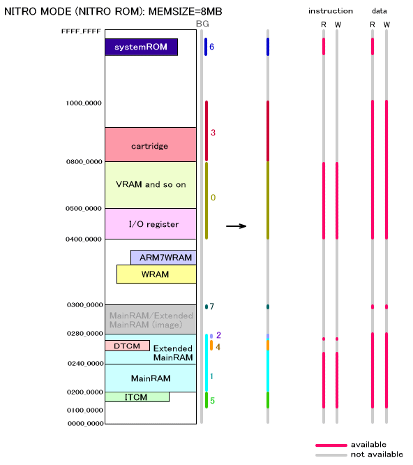 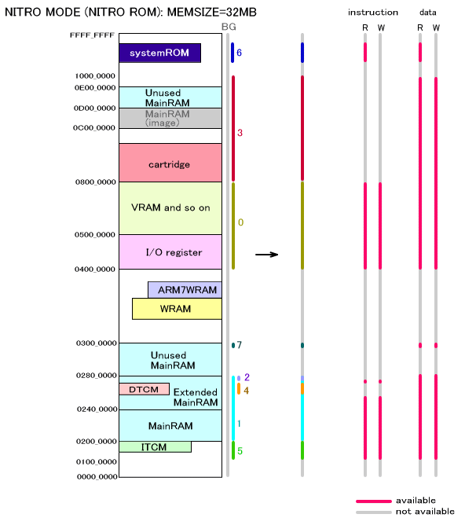 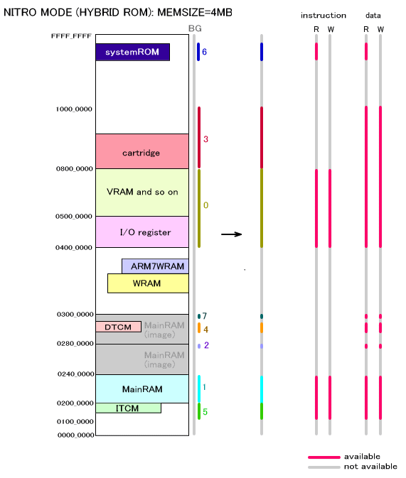 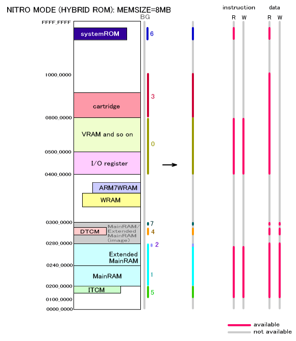 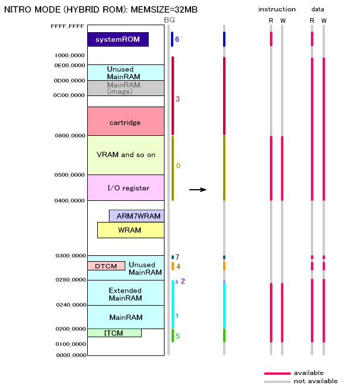
The following figures show an enlarged representation of addresses between 0x02000000 and 0x03000000, which includes main memory and extended main memory.
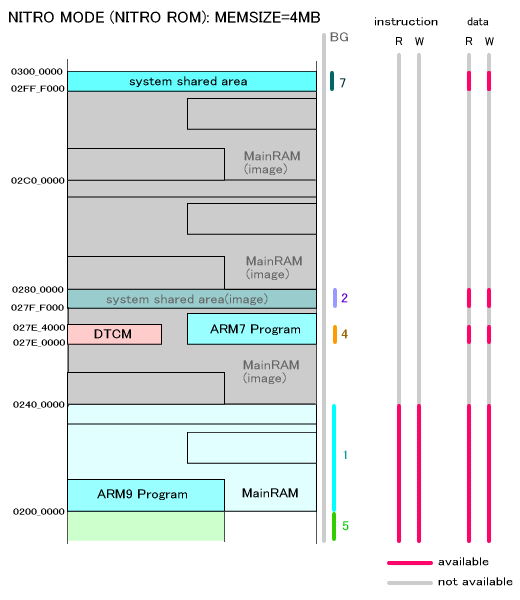 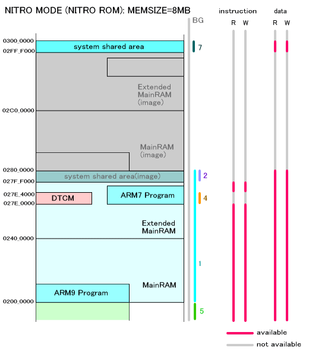 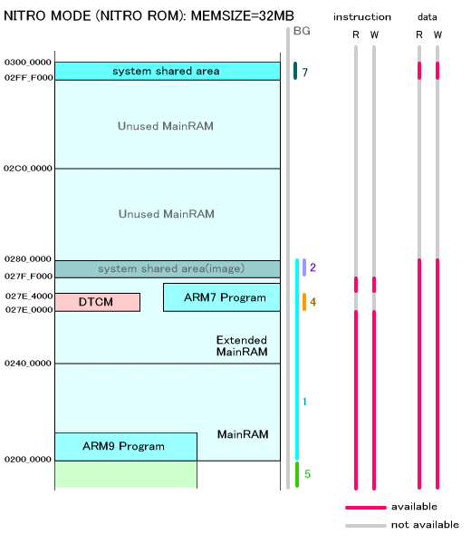 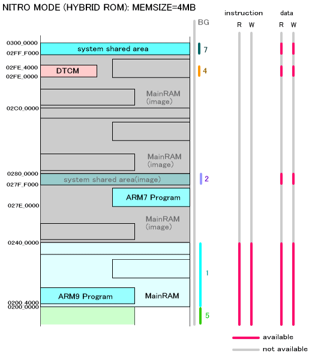 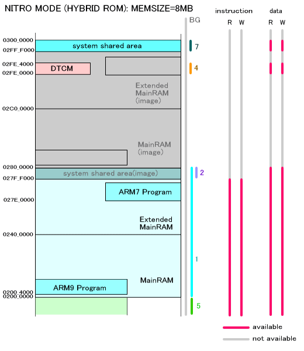 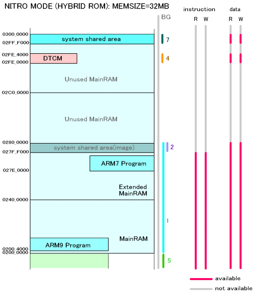
By default, each region is mapped as indicated below.
When the regions overlap, the higher region number has priority.
| Region Number | Usage | Base address | Size | Cache | Write Buffer | User Attribute (Command) | User Attribute (Data) |
|---|---|---|---|---|---|---|---|
| - | Background | 0x00000000 | 4GB ( 0x100000000 ) |
X | X | NA | NA |
| 0 | I/O Register, VRAM, etc. | HW_IOREG |
64MB ( 0x4000000 ) |
X | X | R/W | R/W |
| 1 | Main memory, WRAM | HW_MAIN_MEM_MAIN( 0x02000000 ) |
32MB ( 0x200000 ) |
O | O | R/W | R/W |
| 2 | ARM7-Dedicated Main Memory | HW_MAIN_MEM_SUB ( 0x02F80000) |
512KB ( 0x80000 ) |
X | X | NA | NA |
| 3 | Extended main memory | HW_CTRDG_ROM ( 0x08000000 ) (Caution 5) |
64MB / 128MB ( 0x4000000/0x8000000 ) |
O | O | R/W | R/W |
| 4 | DTCM | HW_DTCM ( 0x02FE0000 ) (Caution 6) |
16KB ( 0x4000 ) |
X | X | NA | R/W |
| 5 | ITCM | HW_ITCM_IMAGE( 0x01000000 ) (Caution 7) |
16MB ( 0x1000000 ) |
X | X | R/W | R/W |
| 6 | BIOS Reserved | HW_TWL_BIOS ( 0xFFFF0000 ) |
32KB ( 0x8000 ) |
O | X | R | R |
| 7 | Shared Main Memory | HW_TWL_MAIN_MEM_SHARED ( 0x02FFC000 ) |
16KB ( 0x4000 ) |
X | X | NA | R/W |
(CAUTION 5)
Extended main memory starts at 0x0C000000, but HW_CTRDG_ROM will be used as a base because the NITRO Game Pak region (starting at 0x08000000) will be accessed to check it. The size will always be 64 MB for the FINALROM build. In any other case, this will be either 128 MB when 32 MB of main memory is installed (when there is extended main memory) or 64 MB otherwise.
(CAUTION 6)
The starting position of the DTCM is specified by the lsf file. The default value is 0x02FE0000.
(CAUTION 7)
Because accessing a NULL pointer will cause an exception, do not start from 0x00000000.
The memory map is shown together with how protection regions are established. There are no differences between a LIMITED ROM and a HYBRID ROM running in TWL mode. The installed memory size is divided into 16 MB and 32 MB, depending on the operating device. However, a FINALROM build assumes that it is operating with 16 MB of installed memory, so see the 16-MB recommendations.
| Operations in TWL Mode | ||
| ROM Type | Operating Platform | Corresponding Item |
|---|---|---|
| HYBRID ROM LIMITED ROM |
Nintendo DSi All FINALROM builds |
TWL MODE :MEMSIZE=16MB |
| IS-TWL-DEBUGGER | TWL MODE :MEMSIZE=32MB | |
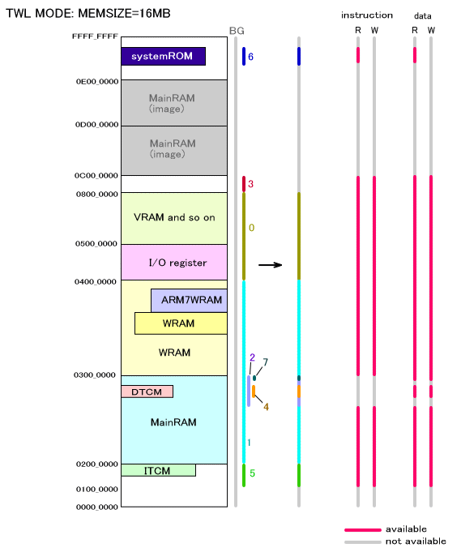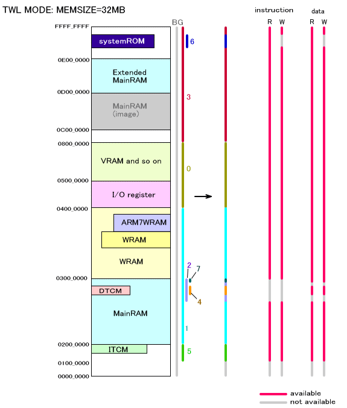
Below is an enlarged representation of the 0x2000000 - 0x3000000 region in main memory. This region is the same for both the 16 MB setting and the 32 MB setting.
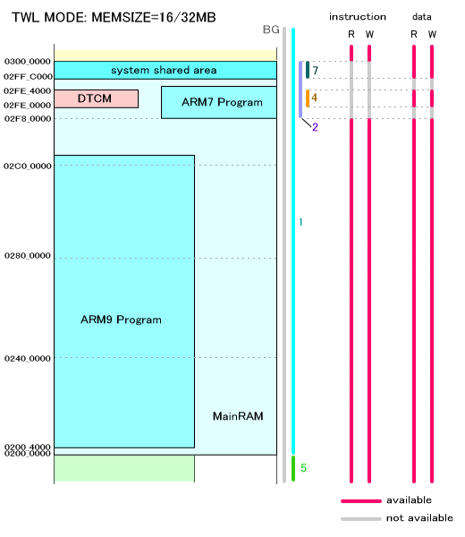
An Overview of OS Functions (Protection Units)
2008/12/02 Adjusted the starting position of the TWL ROM's ARM9 program.
2008/09/08 Split descriptions for NITRO mode into NITRO ROM and HYBRID ROM NITRO.
2008/08/20 Revised Region 3 for the TWL system.
2007/11/26 Made significant revisions to the figures.
2007/10/08 Added TWL-related descriptions.
2006/05/12 Revised the table of default mappings.
2005/04/13 Changed the address for ARM7-dedicated DTCM regions.
2004/12/14 Revised terminology and word endings.
2004/11/17 Initial version.
CONFIDENTIAL